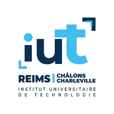
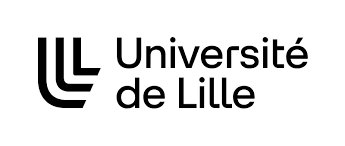
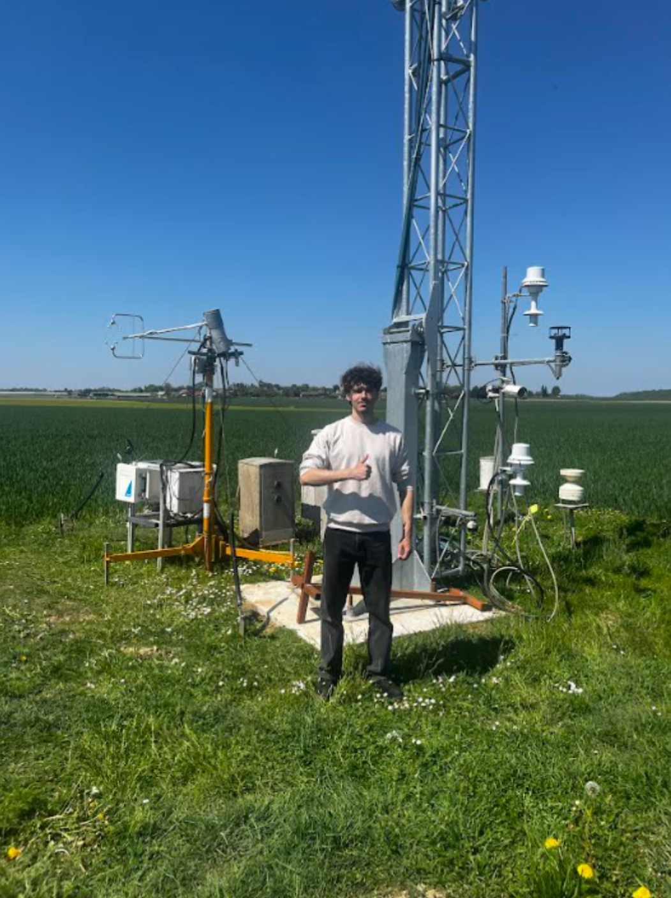

Portfolio de Compétences
À propos de moi
Étudiant en L2 Physique à l'Université de Lille, je suis passé par un BUT Mesures Physiques (spécialité Mesures et Analyses Environnementales). Mon projet est d'intégrer une école d'ingénieurs à la rentrée prochaine. Passionné par les sciences appliquées, je cible des spécialisations variées telles que le Génie Physique, les Matériaux, le Génie des Procédés ou des domaines liés à l'Instrumentation.
Atouts & Savoir-être
Langues
Centres d'intérêt
Futsal (Compétition)
Pendant ma deuxième année de BUT, je pratiquais également le futsal à haut niveau en 2ème division francaise au sein de Reims Métropole Futsal.

Parcours Académique
Approfondissement de mes fondamentaux théoriques et mathématiques, complétant ainsi l'expertise technique acquise en BUT Mesures Physiques
Spécialisation MAE (Mesures et Analyses Environnementales)
Expériences Professionnelles
Août 2025
Technicien en Instrumentation (CDD)
INRAE - UMR BioEcoAgro | Barenton-Bugny
Intégration du module SmartFlux pour le traitement des flux de gaz à effet de serre en temps réel sur une tour à flux ICOS. Installation et configuration du nouveau caisson d'acquisition de données météo sur le terrain.

Avril 2025 - Juin 2025
Stage Technicien Instrumentation
INRAE - UMR BioEcoAgro | Barenton-Bugny
Programmation et câblage de capteurs environnementaux sur dataloggers Campbell CR1000X. Calibration et optimisation des capteurs pour des mesures précises, gestion de la collecte et du traitement des données environnementales.

Compétences & Outils
Informatique & Logiciels
Parc Machines & Instrumentation
Compétences validées par des Projets & TP
Atomic Absorption Spectrometry (AAS) Analysis
Rédaction intégrale en anglais d'un protocole de dosage par spectrométrie d'absorption atomique. Détermination des traces de fer et de cuivre dans un échantillon de vin blanc via la méthode des ajouts dosés.
Consulter le rapport (PDF)Traitement métrologique en calorimétrie
Étude des transferts thermiques et détermination de la chaleur massique d'un alliage de laiton. Évaluation rigoureuse des incertitudes de type A (statistiques) et type B (instrumentales) avec propagation des erreurs.
Consulter le TP (PDF)Numérisation du diagramme de Stevens
Développement d'un programme complet (VBA/Excel) pour automatiser le calcul de la sonie globale via la méthode de Stevens. Modélisation de la perception sonore humaine par régressions exponentielles.
Consulter le TP (PDF)